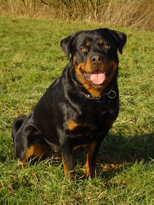

The Rottweiler is a breed of domestic dog, regarded as medium-to-large or large. The dogs were known in German as Rottweiler Metzgerhund, meaning Rottweil butchers' dogs, because their main use was to herd livestock and pull carts laden with butchered meat to market. This continued until the mid-19th century when railways replaced droving. Although still used to herd stock in many parts of the world, Rottweilers are now also used as search and rescue dogs, as guard dogs and police dogs.
Description
The skull is of medium length, and should be broad, especially between the ears. The forehead line is moderately arched as seen from the side, with the occipital bone well developed without being conspicuous. The stop is well defined. The Rottweiler nose is well developed, more broad than round, with relatively large nostrils and always black. The muzzle should appear neither elongated nor shortened in relation to the cranial region. The nasal bridge is broad at the base and moderately tapered. The lips are black and close fitting with the corner of the mouth not visible. The gums should be black, or as dark as possible. Both the upper and lower jaws are strong and broad. According to the FCI Standard Rottweilers should have strong and complete dentition (42 teeth) with scissor bite, the upper incisors closely overlapping the lower incisors. The zygomatic arches should be pronounced. The eyes should be of medium size, almond-shaped and dark brown in colour. The eyelids are close fitting and should not droop. The ears are medium-sized, pendant, triangular, wide apart, and set high on the head. With the ears laid forward close to the head, the skull appears to be broadened. The skin on the head is tight fitting overall. When the dog is alert, the forehead may be slightly wrinkled.
The neck is strong, of fair length, well muscled, slightly arched, clean, free from throatiness.
Rottweiler breed competition at the Reliant Arena American Kennel Club World Series Dog Show 23 July 2006.
The back is straight, strong and firm. The loins are short, strong and deep. The croup is broad, of medium length, and slightly rounded, neither flat nor falling away. The chest is roomy, broad and deep (approximately 50% of the shoulder height) with a well-developed forechest and well sprung ribs. The flanks are not tucked up.
The tail is carried long. Historically the tail was traditionally docked at the first or second joint. However, docking is now banned in most countries and this is reflected in the FCI Country of Origin Breed Standard.